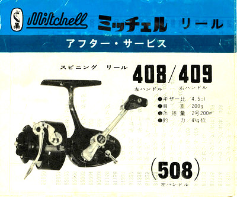

ティップス
釣りの前夜に スピニングリールの取り扱いとメンテナンス方法
先日、ミッチェル409の故障修理の際、付属の取扱説明書が押し入れから出て来た。当時の輸入販売代理店だった「新東亜交易」という会社が作成したものである。

ミッチェル 408/409 (508) 取扱説明書 表紙
{kind=link}
{kind=link}
ミッチェルやアブなどの古いリールを使っておられる方はもとより、現在販売されているスピニングリールの取り扱いやメンテナンスにも参考になると思ったので、肝心なところだけテキストに起こしてみました。
- 水につけないこと。特に海水に落した場合は出来るだけ早く引揚げ、水洗い後サービスにお廻し下さい。
- 落さぬ事。固いコンクリートなどの上に落すとスピニングリールの場合、本体の "アシ" が折れます。
- 成るべく自分で分解しないこと。グリース又はオイル注入程度で充分。ミッチェルは超精密構造で寸分のスキもなく組立られています。一般の釣り人には分解は出来ても完全な組立と部品の噛み合せは困難で、反って高価なメインギヤーなどを傷つけてしまうケースが多く見受けられます。通常週に一回位の釣り行では年一回のオーバーホールで充分です。
- 釣り行の際、他の荷物と一緒につめこまず、出来れば余裕のあるタックルボックス、空きカンなどに入れ持ち運ぶこと。スピニングの場合ベイルの変型によるいわゆる "半開き" 状態の故障は原因の99%がこのためです。
- ハンドルを外した場合、本体との聞に入っているワッシャーをなくさぬこと (308、408、302など) 知らずにこのワッシャーを落すとハンドルは廻りません。
- ドラグの調整。目一杯に締めないこと。ラインを引張りジリジリ出る程度が適当なドラグのセッティツグです。
- リールをじかに砂地や泥地面に触れぬこと。内部に泥や砂などの異物が入ると高価な内部部品が磨耗、腐蝕します。釣場などで休憩のときはロッドを側の樹木、岩、タックルボックスにたてかけるなど目につき易い位置におきましょう。
- 330/440 などオートマットはベイル機構がその使用目的上 (主としてルア一用) デリケートです。やむなくオモリを使用する場合でも10号以上は無理です。
- 糸捲量の不足が目立ちます。キャステインク距離がのびませんから良質のラインをスプールの上のへリ迄一杯にお捲き下きい。
- ポンドテストの異る (太きの違う) 各種のラインを捲いた替スプール数個を用意すると糸ヨレ、バックラッシュなどの思わぬ事故の場合便利です。600シリーズはプラスチック製スプールもあります。
- 御使用後、特に海釣りの場合
- 水道蛇口の下でタワシでゴシゴシ洗い塩分、砂、泥などをとりさる。
- 決して水槽の中につけないこと。長時間放置すると浸水のオソレがあります。
- 強く振って水切りをし、日蔭で乾し、充分に水分を蒸発させること。
- シャフト各部 (プッシュボタンのツメの部分も) にグリースを塗り、軸受け、ストッパー、ハンドル各部、ベイル各部にオイル (ガルシア、シリコンオイルが最高) を注入すること。
- 清潔な布で余分のオイルを拭きとり、ガルシア、シリコンクロスで磨きあげると、ピカピカに仕上ります。
参考として、手持ちのダイワのリールの取扱説明書を見てみましたが、それに書かれていないこともあって、勉強になりました。これからも古いミッチェルを大事に使っていきたいと思います。
2019/12/30
ティップス 目次へ
サイトマップ
ホームへ
お問い合わせ